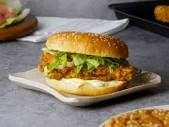

ZINGER BURGER

INGREDIENT
- Chicken fillet ( 4 to 5 )
- Iceberg lettuce ( 4 to 5 leaves )
- Hot sauce ( as required )
- Mayonnaise ( as required )
HOW TO MAKE ZINGER BURGER
- In a bowl, whisk the eggs and set aside. Crumble chicken cube in flour.
- Take another bowl, add the dry ingredients, including chicken cube flour and mix them well. Rub the dry
spices well into the pieces of chicken and dip them in the whisked eggs. Repeat this process three to four
times.
- Fry chicken till golden brown.
- Take round bun and cut in the middle, grease the pan lightly and toast both sides. Put hot milk and then
mayonnaise on the buns
- Place the chicken pieces on the buns and put hot sauce over them.
- Lastly, put iceberg lettuce and cheese slices and close the bun. Your chicken burgers are ready